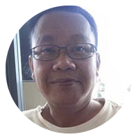
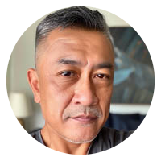

Metode dr. Boyke Dian Nugraha membantu memulihkan
kemampuan ereksi
sekaligus kesehatan prostat
hanya dalam 2 hari.
Video sudah dimulai
Klik untuk mendengarkan!
Memuat video
DITAMPILKAN DI
Komentar
Fajar Nugroho
Bagus banget buat masalah prostat! Waktu gejala saya makin parah—sering kencing,
alirannya makin lemah, dan susah tidur tiap malam—saya menemukan Healthpeak di
internet dan langsung pesan. Hari pertama belum terasa apa-apa, tapi setelah
seminggu kondisi saya jauh lebih baik: kencing lebih lancar dan nggak terus-terusan
kebelet lagi.
Suka
·
Balas
·
222 menit yang lalu
Dedi Saputra
Saya sudah mencoba macam-macam obat dan suplemen untuk masalah prostat, tapi cuma
Healthpeak yang hasilnya tahan lama. Rasa perih waktu kencing hilang, aliran kencing
kembali lancar, dan sekarang saya nggak perlu bolak-balik ke kamar mandi lagi. Saya
rekomendasikan banget buat siapa pun yang punya masalah prostat!
Suka
·
Balas
·
113 menit yang lalu
Hendra Wijaya
Umur saya 50 tahun dan masalah prostat saya sudah parah. Kencing tersendat-sendat,
alirannya lemah, dan setiap malam saya harus bangun berkali-kali untuk ke toilet.
Obat-obatan yang dulu saya coba juga sudah nggak mempan. Berkat Healthpeak, rasanya
saya jadi 15 tahun lebih muda. Sekarang kencing lancar, bisa kerja dengan tenang,
dan keluar rumah tanpa takut harus buru-buru cari toilet!
Suka
·
Balas
·
93 menit yang lalu

Andi Pratama
Saya baru 48 tahun, tapi sudah mengalami masalah prostat seperti ini. Hampir tiap
malam saya bolak-balik ke kamar mandi, dan setiap buang air kecil rasanya perih.
Saya kira umur segini masih terlalu muda buat kena prostatitis. Healthpeak yang saya
pesan baru sampai kemarin, dan hari ini saya minum kapsul pertama. Sudah nggak sabar
bisa tidur nyenyak tanpa harus bolak-balik ke kamar mandi!
Suka
·
Balas
·
183 menit yang lalu
Budi Santoso
Umur saya baru 31 tahun, tapi sudah kena prostatitis. Sering kebelet kencing,
terutama malam hari, padahal aliran kencing makin lemah. Untung saya menemukan
Healthpeak. Setelah selesai minum Healthpeak, sekarang kencing saya lancar lagi!
Saya nggak perlu lagi bolak-balik ke toilet dan akhirnya bisa tidur nyenyak
semalaman!
Suka
·
Balas
·
173 menit yang lalu

Rizky Kurniawan
Setelah selesai minum Healthpeak, saya bisa kencing lancar lagi dan tidur semalaman
tanpa harus berkali-kali bangun ke toilet! Istri saya sampai nggak percaya: “Kok
sekarang kamu nggak bolak-balik ke kamar mandi lagi?” 😄
Suka
·
Balas
·
153 menit yang lalu
Agus Setiawan
Betul banget! Dulu saya sering kencing, tapi alirannya makin lemah. Setelah selesai
minum Healthpeak, sekarang kencing jauh lebih lancar dan saya nggak harus bangun
berkali-kali setiap malam. Bahkan sekarang saya bisa main sama cucu tanpa harus
sebentar-sebentar cari toilet!

